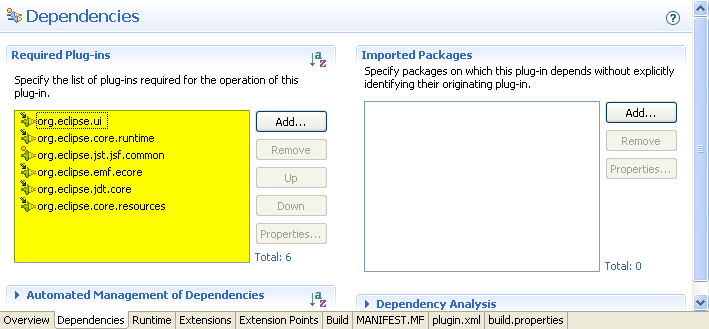
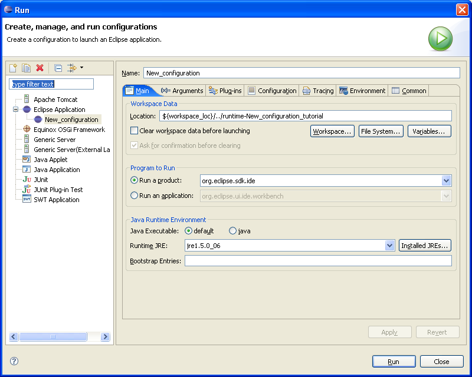
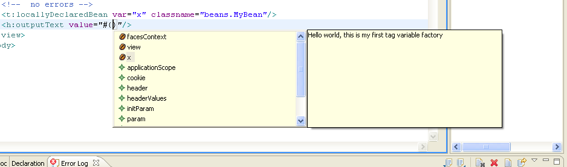

Implementing a New Tag-Based EL Variable Contributor for JSP |


Add the plugin dependencies highlighted in yellow below:

Now we are ready to construct our factory and meta-data extensions.
Create a new java class in your project by clicking on the src folder and clicking File > New > Class.
Call the class "LocallyDeclaredBeanFactory" and make sure it extends
org.eclipse.jst.jsf.context.symbol.source.AbstractContextSymbolFactory.
Also be sure enable the check box, Inherited abstract methods:
public boolean supports(IAdaptable context) {
return context.getAdapter(IStructuredDocumentContext.class) != null;
}
protected ISymbol internalCreate(String symbolName, int scope, IAdaptable context, List problems)
{
// get the context
final IStructuredDocumentContext sContext =
(IStructuredDocumentContext)context.getAdapter(IStructuredDocumentContext.class);
// construct a dom resolver for this context
final IDOMContextResolver domResolver =
IStructuredDocumentContextResolverFactory.INSTANCE.getDOMContextResolver(sContext);
// if resolver can be constructed
if (domResolver != null)
{
// get the current node
// this is the node marked by our meta-data as contributing an el variable
final Node curNode = domResolver.getNode();
// node must be an XML attribute
if (curNode instanceof Attr)
{
final Attr attr = (Attr) curNode;
final Node owningElement = attr.getOwnerElement();
//attribute must have a owningElement
if (owningElement != null)
{
IWorkspaceContextResolver workspaceResolver =
IStructuredDocumentContextResolverFactory.INSTANCE.getWorkspaceContextResolver(sContext);
IProject iProject = workspaceResolver.getProject();
if (iProject != null)
{
return
handleSymbolCreation(symbolName, sContext, attr, owningElement,
iProject);
}
}
}
}
return null;
}
private ISymbol handleSymbolCreation(final String symbolName,
final IStructuredDocumentContext context,
final Attr attr,
final Node owningElement,
final IProject project)
{
// create tag lib resolver for this context
final ITaglibContextResolver resolver = IStructuredDocumentContextResolverFactory.INSTANCE
.getTaglibContextResolver(context);
if (resolver == null || !resolver.canResolveContext(context)) {
return null;
}
final String uri = resolver.getTagURIForNodeName(owningElement);
IBeanInstanceSymbol beanSymbol = null;
// process core taglib
if ("http://oracle.com/tutorial/fake/taglib".equals(uri)) {
final String elementName = owningElement.getLocalName();
final String attrName = attr.getName();
// protect ourselves by ensuring we are in the var attribute of
// a locallyDeclaredBean
if ("locallyDeclaredBean".equals(elementName)) {
if ("var".equals(attrName)) {
final NamedNodeMap attrMap =
owningElement.getAttributes();
final Node baseNameNode =
attrMap.getNamedItem("classname");
if (baseNameNode instanceof Attr)
{
// get the name of the bean's class
final String
className = ((Attr)baseNameNode).getValue();
// create a new empty bean instance symbol
// this will encapsulate all of the design time information
// about our new variable
beanSymbol =
SymbolFactory.eINSTANCE.createIBeanInstanceSymbol();
// name the new variable after the value of the var attribute
// in the tag
beanSymbol.setName(attr.getValue());
// next, we will ask JDT to resolve the class name to a type
try
{
IJavaProject javaProject = JavaCore.create(project);
IType type = javaProject.findType(className);
// don't bother setting a type descriptor if we
// can't find a type
if (type != null)
{
// now we must create a type descriptor that encapsulates
// the specific type information about our bean
IJavaTypeDescriptor2 javaTypeDescriptor =
SymbolFactory.eINSTANCE.createIJavaTypeDescriptor2();
javaTypeDescriptor.setType(type);
beanSymbol.setJavaTypeDescriptor(javaTypeDescriptor);
}
}
catch (JavaModelException jme)
{
// could not construct
// fall-through
}
// finally, add a description that will appear in the content assis
// drop-down, to prove that it really worked
beanSymbol.setDetailedDescription("Hello world, this is my first tag variable factory");
}
}
}
}
return beanSymbol;
}
You may need to hit Ctrl-O to organize your imports.
Save the class and check that it compiles.<t:locallyDeclaredBean var="x" classname="beans.MyBean"/>
declare a variable called "x" to the tooling which corresponds to a bean
of type "beans.MyBean". In order to tell the framework this, we
must use meta-data to annotate the t:locallyDeclaredBean.
First we create a new folder in our project called metadata:
Next use right-click on the project click File > New > File to create a new meta-data xml file:

Open the file as source and copy the following markup into the editor:
<?xml version="1.0" encoding="UTF-8"?> <md:metadatamodel xmlns:xsi="http://www.w3.org/2001/XMLSchema-instance" xmlns:ecore="http://www.eclipse.org/emf/2002/Ecore" xmlns:md="http://org.eclipse.jst.jsf.common.metadata/metadata.ecore" xmlns:mdt="http://org.eclipse.jst.jsf.common.metadata/metadataTraitTypes.ecore" id="http://oracle.com/tutorial/fake/taglib"> <entity id="locallyDeclaredBean"> <entity id="var"> <trait id="contributes-value-binding"> <value>true</value> </trait> <trait id="value-binding-scope"> <value>request</value> </trait> <trait id="value-binding-symbol-factory"> <value>tutorial.locallyDeclaredBean</value> </trait> </entity> </entity> </md:metadatamodel>
Notice the entities and traits. The "var" attribute entity is a child of the "locallyDeclaredBean" entity.
The property
"value-binding-symbol-factory" is what points the framework to our
factory. However the value here is not the factory itself, but an
id for its extension, which we'll define in the next section.
Notice that the value we put in the factory property matches what is in the "value-binding-symbol-factory" metadata property. These values must match so that the framework can find our factory.
We are now finished with defining our tag contributor (easy huh?). But we're not quite finished. We need to construct a dynamic web project complete with our fake tag library to test out what we've done.

Once the workbench has loaded, go to New > Project > Other and select Web > Dynamic Web Project and hit Next.
Name the project and hit next. From the Project Facets wizard page, enable the JavaServer Faces facet and click Next. Click Next at the Web Modules page leaving the defaults unchanged. Last you will come to the JSF Capabilities
page. Here you need to set up your JSF Libraries (see user's
guide for more details on JSF Libraries). When you are done,
click Finish. This should create a skeletal JSF project. Next we will add the "fake" tag library.
<?xml version="1.0" encoding="ISO-8859-1" ?>
<!DOCTYPE taglib
PUBLIC "-//Sun Microsystems, Inc.//DTD JSP Tag Library 1.2//EN"
"http://java.sun.com/dtd/web-jsptaglibrary_1_2.dtd">
<taglib>
<!-- ========== Tag Library Description Elements ========================= -->
<tlib-version>1.0</tlib-version>
<jsp-version>1.2</jsp-version>
<short-name>tutorial</short-name>
<uri>http://oracle.com/tutorial/fake/taglib</uri>
<description>
An tld to help demonstrate how to implemented tag contributed EL variables.
NOTE: this is a taglib for demonstration purposes: it is not fully or correctly
implemented and it is not intended to be run in real JSP applications
</description>
<tag>
<name>locallyDeclaredBean</name>
<tag-class>foo</tag-class>
<tei-class>foo</tei-class>
<body-content>empty</body-content>
<description>
Tag declares a new bean variable at request scope based on the name
and classname provided.
</description>
<attribute>
<name>var</name>
<required>true</required>
<rtexprvalue>false</rtexprvalue>
<description>
The name of the locally declared variable. This name will be added
to the EL variable namespace for the JSP in which it is used at request scope
</description>
</attribute>
<attribute>
<name>classname</name>
<required>true</required>
<rtexprvalue>false</rtexprvalue>
<description>
The fully qualified name of the Java class that will be instantiated as
the backing bean for the locally declared bean.
</description>
</attribute>
</tag>
</taglib>
package beans;
public class MyBean
{
public String getFooProperty()
{
return "foo!";
}
}
<%@page contentType="text/html"%>
<%@page pageEncoding="UTF-8"%>
<%--
>The taglib directive below imports the JSTL library. If you uncomment it,<br/>you must also add the JSTL library to the project. The Add Library... action on Libraries node in Projects view can be used to add the JSTL 1.1 library.
--%>
<%@taglib uri="http://java.sun.com/jsf/core" prefix="f"%>
<%@taglib uri="http://java.sun.com/jsf/html" prefix="h"%>
<%@taglib uri="http://oracle.com/tutorial/fake/taglib" prefix="t" %>
<!DOCTYPE HTML PUBLIC "-//W3C//DTD HTML 4.01 Transitional//EN"
"http://www.w3.org/TR/html4/loose.dtd">
<html>
<head>
<meta http-equiv="Content-Type" content="text/html; charset=UTF-8">
<title>JSP Page</title>
</head>
<body>
<f:view>
<h1>JSP Page</h1>
<!-- no errors -->
<t:locallyDeclaredBean var="x" classname="beans.MyBean"/>
<h:outputText value="#{}"/>
</f:view>
</body>
</html>
Note a few things. First, we have a taglib declared for our "fake" tag library with prefix "t". Second, we have declared a bean using the locallyDeclaredBean tag to declare a variable "x" of the type "beans.MyBean" that we created above.
So now let's test it. Position your cursor inside the empty "{}"
braces in the value attribute of the outputText tag. Type
Ctrl-Space to request content assist. You should see your bean
"x" in the list:

You can try requesting content assist for the property we added in the bean by typing a period after the "x":

Select the property so that the EL text reads "x.fooProperty". Finally, right-click on the JSP file in the File Explorer and select Validate to prove that your variable and property are recognized correctly by the validation framework.
We hope this tutorial has helped you understand how to use the JSF tooling to add design time support for your JSF component tag libraries that contribute EL variables. If you need further help or have trouble with this tutorial please post to our web forum on eclipse.org. Putting "EL Variable Contributor" in the subject will ensure speedier response from knowledgeable parties.